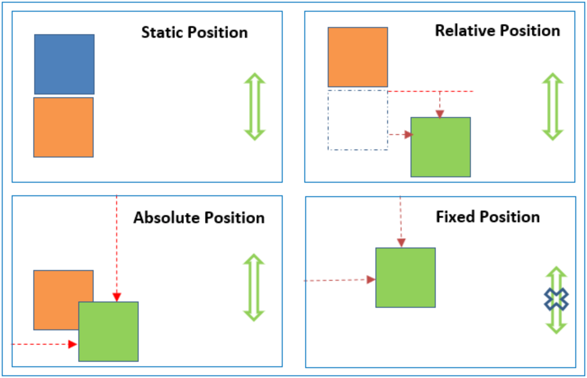

To understand the position property, we first need to understand that every web page element is a block. These elements respect the attributes that are set, like width and height.
There are five values in the position property that allow the positioning of those blocks: relative, absolute, fixed, static and sticky, each of them is useful and the choice of which one to use depends on the desired result. Here we explain the first three values.
 Image source: https://www.csssolid.com/css-position.htmlRelative
This position is relative to itself. If no attributes are set to the element (top, left, bottom or right), its positioning will not be affected. It will be as if the position was static. However, suppose an attribute is given, for example, top: 20px. In that case, the element will shift its position 20 pixels down from the top, where it would be.
Absolute
This type of positioning allows a page element to be placed precisely where desired. These values will be relative to the next parent element that have relative or absolute positioning. If there is no such parent, it will be placed relative to the page itself. Use the positioning attributes top, left, bottom, and right to set the location.
Fixed
Here the element is positioned relative to the page, not to any other element. So a fixed-positioned element will stay put when the page is scrolled. This positioning might be used for something like a navigation bar that needs to remain visible at all times.